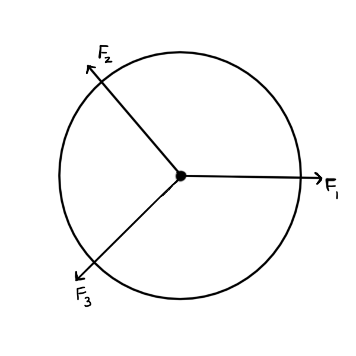
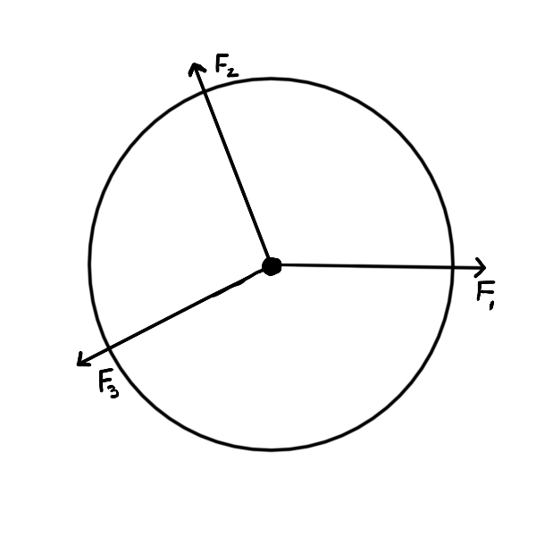

Lab 04 - Forces
Table of Contents
We will determine the precise masses needed to place the Force Table into equilibrium. This is done using a Free Body Diagram and Summation of the Forces to solve for the unknown forces.
Experiment 1: Balancing an unknown force
Place the pulleys on the force table to the angles given below. Place a mass hanger on each of the strings add the below masses to the hanger. Record the known masses and angles and calculate the forces due to the individual masses.
\(m_1 = 0.15~kg\qquad\) angle=\(0^\circ \qquad F_1\):________________
\(m_2 = 0.35~kg\qquad\) angle=\(147^\circ \qquad F_2\):________________
\(m_3 = 0.25~kg\qquad\) angle=\(230^\circ \qquad F_3\):________________
- Draw a Free Body Diagram for the center ring. Be sure to label the forces acting on ring and angles relative (starting) to 0°.
- Using your coordinate system, break down each of the vector forces into their components. Please pay close attention to the steps involved here. You will need to calculate vector components for every problem in this chapter (and later chapters).
| Force | \(F_x\) | \(F_y\) |
|---|---|---|
| \(F_1=\qquad\qquad\) | \(\qquad\qquad\) | \(\qquad\qquad\) |
| \(F_2=\) | ||
| \(F_3=\) |
- Solve for the unknown overall force by summing the forces in the X and Y direction (Show your work).
Calculate the mass which is needed to offset this overall force, making the total force equal to zero. Place a mass on the appropriate mass hanger and observe if the ring touches the center pin. If the ring still touches the center pin check your calculations again.

Experiment 2: Find equilibrium with two unknown masses
Now lets solve a harder problem :) In this part two of the masses (\(m_2\) and \(m_3\)) are unknown. one of the masses is known (m1) and all three angles are known.
Label Mass (kg) Angle (deg) \(m_1\) \(0.35\) \(0^\circ\) \(m_2\) ? \(115^\circ\) \(m_3\) ? \(207^\circ\)
- Use Newtons second law to write find the masses you need to add to hanger 2 and 3 to put the system into equilibrium. Set up a system of equations in both the X and Y directions to complete this task.
Add your calculated masses to the hangers and observe if the system returns to equilibrium. If the ring touches, check your calculations again.

- If all the mass hangers carried equal masses, what would the angles need to be for the ring to not touch the pin? Why?
- Since all the mass hangers are 50g could you have ignored them in your calculations in part 4? Explain why you could or could not.